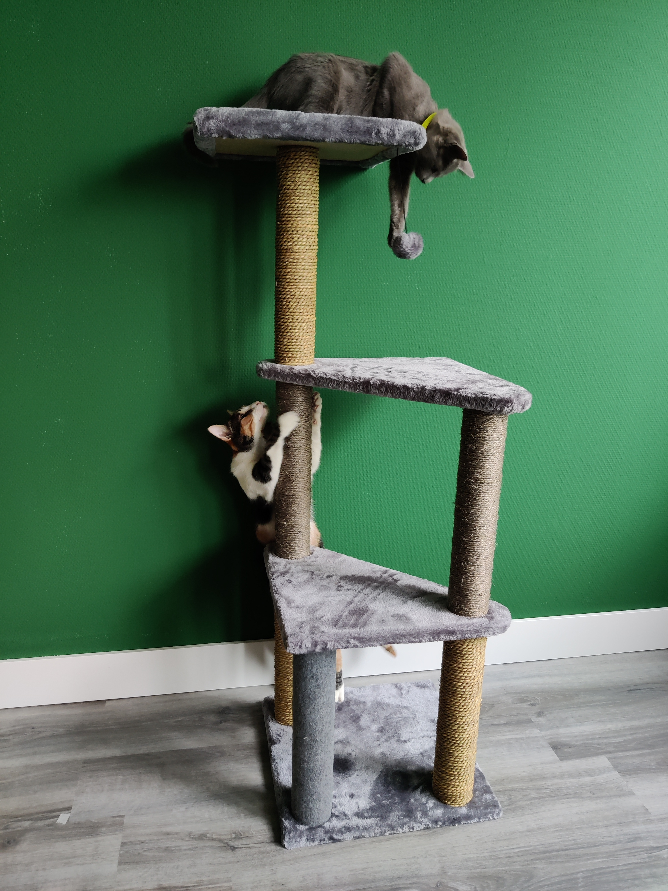
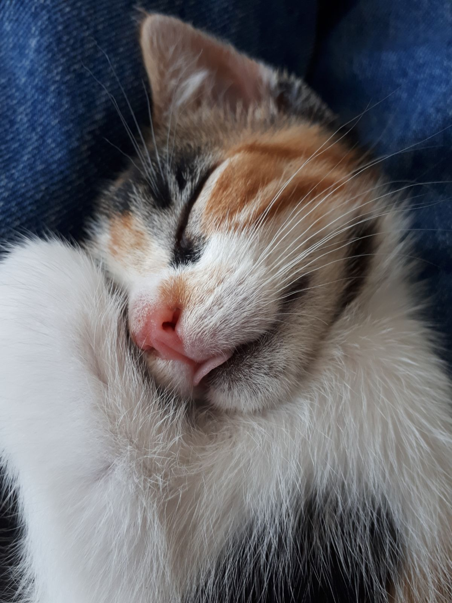
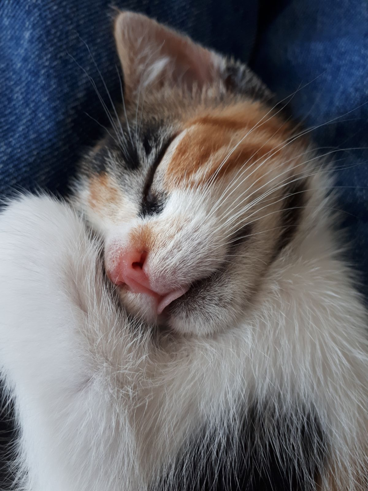
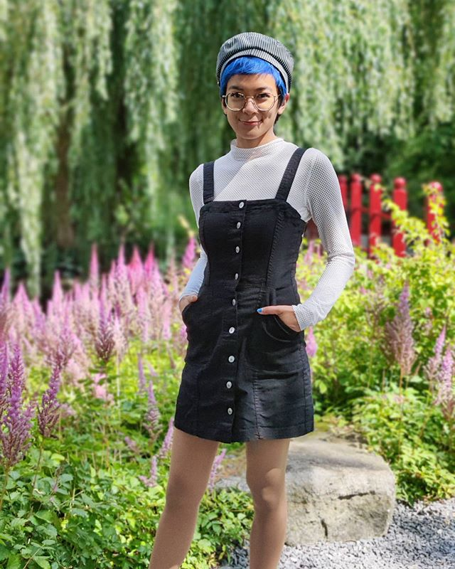
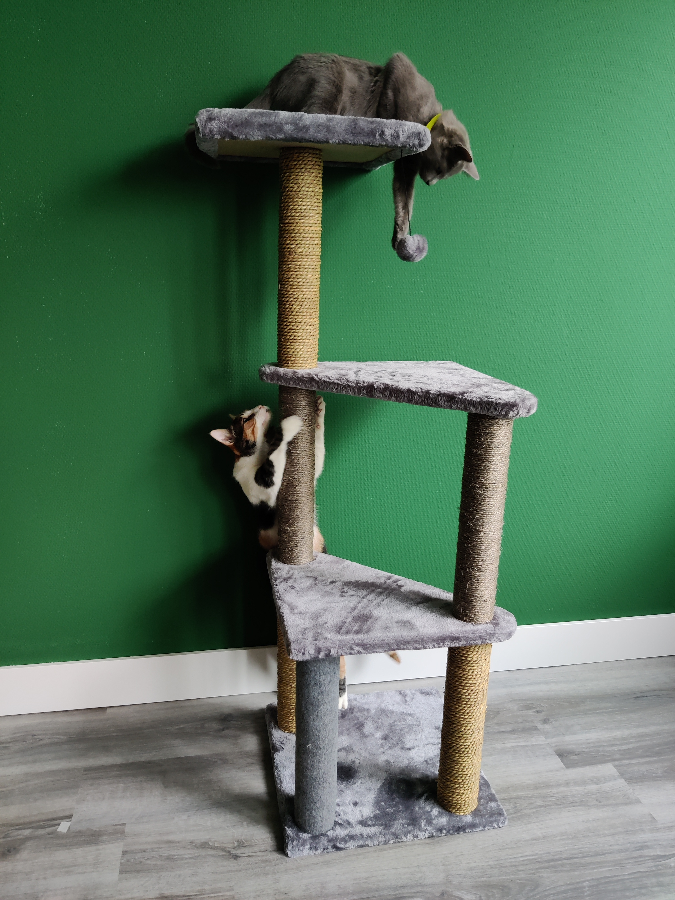
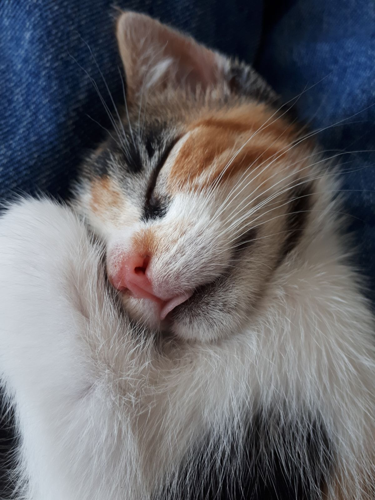

 
 
Hi! I'm Gess and this is my first time ever making something cool like this, so I hope you'll enjoy my page!

I was born and raised in Indonesia and moved to the Netherlands about 15 years ago. I speak Dutch quite fluently now,
however I still don't know what the deal is with 'de' and 'het' and I feel like I will forever guess which definite article to use. I speak three languages (English, Dutch, and Bahasa Indonesia) and can follow basic conversations in German
and French. I am very interested in languages and I've made it my life's work to learn as many languages as I can!
I did a Dutch Sign Language course last semester and passed the class (yay!) and I've been learning Korean at home with the help of an amazing site called Talk To Me In Korean.
I finished my BA in English Language and Culture at the University of Leiden at the beginning of this year, with Philology as my specialisation. My thesis discusses the heroic culture of Anglo-Saxon literature within J.R.R. Tolkien's The Children of Húrin as I am quite interested in (read: love with a capital L) Tolkien's Legendarium. Philology taught me to be curious about the history of one of my most favourite things - books. It introduced me to Manuscript Studies which I find fascinating; I will remember the day when my Philo lecturer - and thesis advisor - dr. Porck allowed me to gently touch a medieval manuscript with my bare hands for the first time ever. This is an odd thing to be excited about and I will geek about this wonderful experience that lasted maybe 5 seconds for my entire life. It was then that I decided that I want to pursue a career in Manuscript Studies and so here I am, doing the MA Book and Digital Media Studies. :)
I'm an ambivert, leaning a bit more towards the introverted side, so I love to be by myself enjoying my hobbies, but also hanging out with my friends - at home. :p
I have lots of hobbies to keep myself busy, some of them are:
I used to strongly dislike cats as they always seemed to strongly dislike me as well. However, after living in Leiden for two years and befriending
all sorts of roaming, friendly cats, I have come to a revelation: everyone is a cat-person, those who deny it aren't ready to face the truth just yet, but that's okay. :)
Now I have two of the sweetest little gremlins, Nekko and Tina, who always join me in another hobby of mine - napping.
 
Here are some lists of a couple of things that I've read, seen, or listened to these last couple of weeks. They are in the order of last 'viewed'; I'm still reading/watching/listening to the number ones.
| Books | Films | Series | Songs |
|
|
|
|
I met Billy Boyd, who played Pippin in The Lord of the Rings, at the 2017 Comic Con in Utrecht.
I've been dancing since I was 4 years old and regularly performed on stage.
I love to keep plants but bad at keeping them alive.
I can't swim :(
I thought I would dislike doing HTML, but I'm pleasantly surprised at how much fun I'm having. :)